Data Preparation
The TL;DR
Our Process Flow in a diagram:
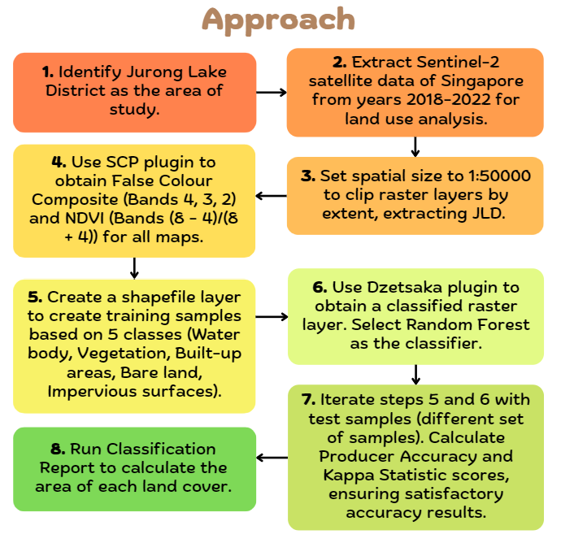
Glossary of tools utilized
| Tools | Use Case |
|---|---|
Dzetsaka Plugin (Fun Fact - Dzetsaka is a word representing the objects we use to see the world through, such as satellites, microscope, cameras) |
Classification of raster layer using Random Forest Algorithm. Motivation behind choosing Dzetsaka Plugin over SCP for classification:
|
| Semi-Automatic Classification Plugin |
|
Glossary of Datasets obtained
| Data | Description and Link |
|---|---|
| Sentinel-2 Data of Singapore from 2018-2022 | Rationale behind choosing Sentinel-2 over LandSat 8: Sentinel-2 data provides higher spatial resolution and image quality as compared to LandSat 8 data. Since Jurong Lake District covers a smaller area, higher resolution images will allow us to more accurately classify the land cover Link: Copernicus Open Access Hub Dates Extracted: 2018 - Feb 10 2019 - Feb 25 2020 - Jan 26 2021 - Apr 25 2022 - Jan 30 Approach: To extract data with as little cloud cover as possible, in the search bar, filter the cloud cover percentage to 20%. 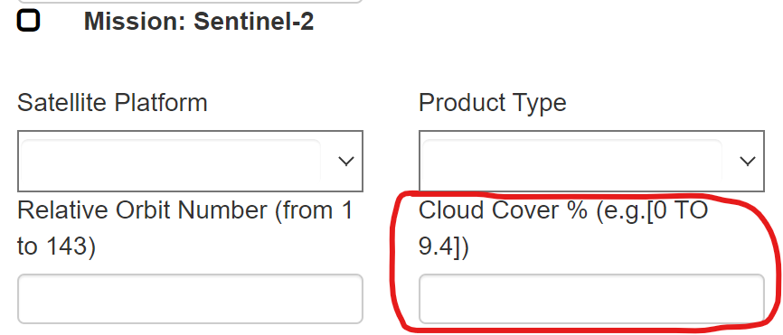 |
| Master Plan 2019 Subzone Boundary (No Sea) | data.gov.sg |
Comprehensive Guide for Replication
Data Extraction & Preprocessing
To add the Sentinel-2 files to QGIS, from the menu bar, select ‘Layer’ → ‘Add Layer’ → ‘Add Raster Layer…’.
The Data Source Manager window will appear. Click the ‘…’ button and browse for bands 2, 3, 4 and 8. Click ‘Open’, then click ‘Add’ and ‘Close’
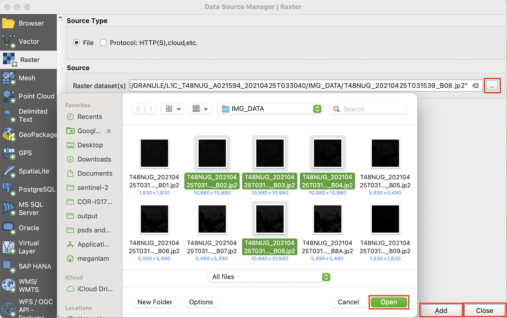
To extract the Jurong Lake District area, open the Master Plan 2019 Subzone Boundary (No Sea) file as a new layer. Open the layer’s attribute table and click the ‘Select features using an expression’ button. The ‘Select by Expression’ window will appear. In the ‘Expression’ panel, enter “SUBZONE_N” = ‘JURONG GATEWAY’ OR “SUBZONE_N” = ‘LAKESIDE (BUSINESS)’ OR “SUBZONE_N” = ‘LAKESIDE (LEISURE)’. Click ‘Select Features’, then click ‘Close’.
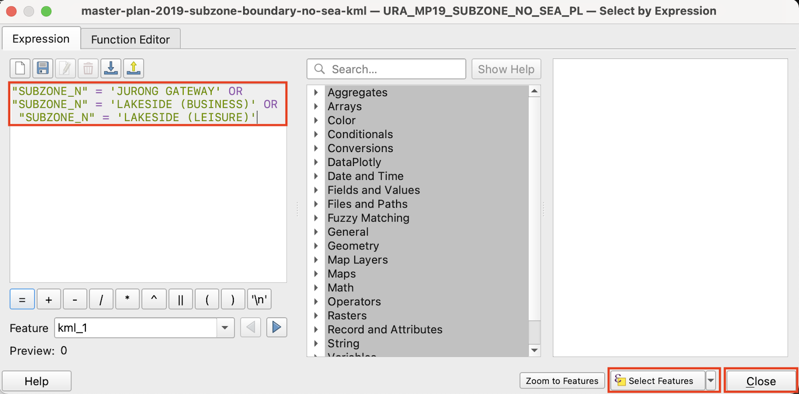
The Jurong Lake District area will be highlighted in yellow. To save the area, right-click the layer and select ‘Export’ → ‘Save Selected Features As…’ from the context menu.
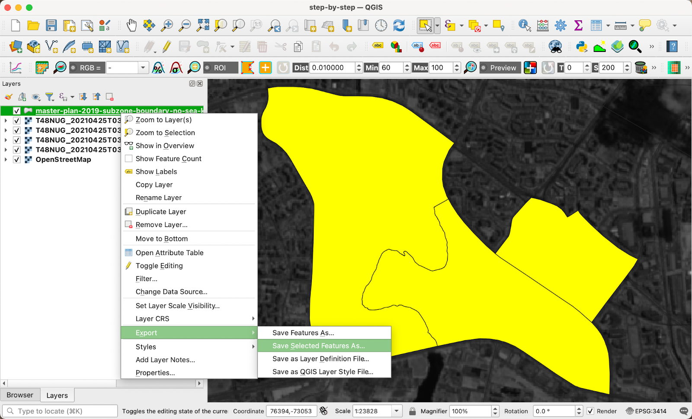
The ‘Save Vector Layer as…’ window will appear.
For ‘Format’, select ‘GeoPackage’ from the drop-down list.
For ‘File name’, click the ‘...’ button to create a ‘JLD’ GeoPackage in the ‘GeoPackage’ folder.
For ‘Layer name’, enter ‘Jurong Lake District’.
For ‘CRS’, select ‘EPSG:3414 - SVY21 / Singapore TM’ from the drop-down list.
Click ‘OK’. A ‘Jurong Lake District’ layer will appear.
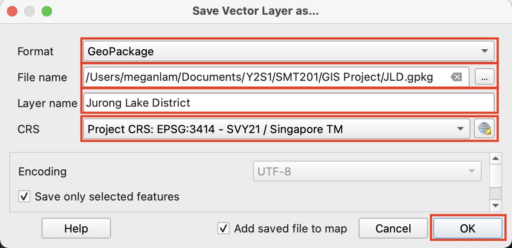
Remove the Master Plan 2019 Subzone Boundary (No Sea) layer. To extract Sentinel-2 data within the Jurong Lake District area, from the menu bar, select ‘Raster’ → ‘Extraction’ → ‘Clip Raster by Extent…’.
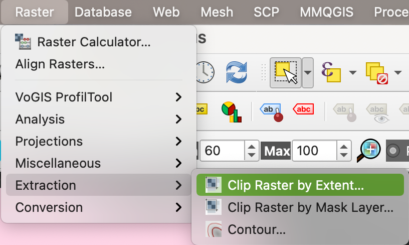
The ‘Clip Raster by Extent’ window will appear. Click ‘Run as Batch Process…’.
- For ‘Input layer’, select ‘Autofill…’ → ‘Select from Open Layers’ from the context menu. Select all the Sentinel-2 band layers and click ‘OK’.
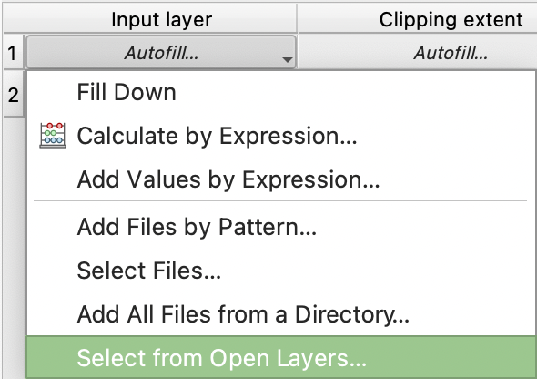
- For ‘Clipping Extent, click the drop-down arrow for the first band and select ’Calculate from Layer’ → ‘Jurong Lake District’ from the context menu. Then, select ‘Autofill…’ → ‘Fill Down’.
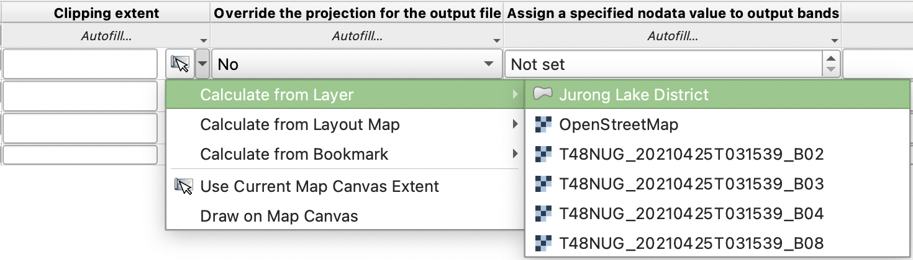
For ‘Clipped (extent)’, click the ‘...’ button to save the clipped layers as ‘JLD_’.
In the ‘Autofill settings’ window,
For ‘Autofill mode’, select ‘Fill with parameter values’ from the drop-down list.
For ‘Parameter to use’, select ‘Input layer’ from the drop-down list.
Click ‘OK’.
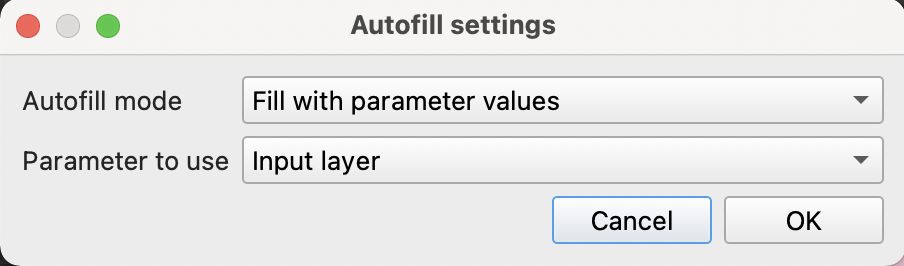
- Check the box for ‘Load layers on completion’.
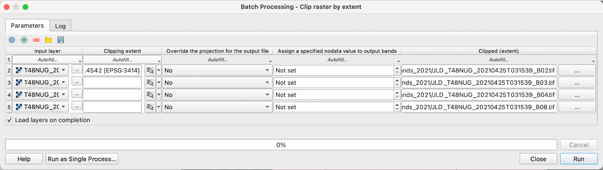
Click ‘Run’. The clipped band layers will appear. Remove the unclipped band layers.
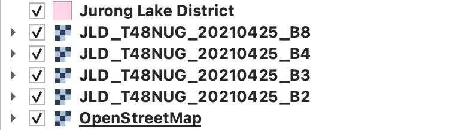
Processing Remote Sensing Images, Classification and Deriving Insights
(A) Creating Remote Sensing Images
To create the NDVI layer, from the menu bar, select ‘Raster’ → ‘Raster Calculator’.
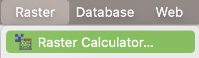
The ‘Raster Calculator’ window will appear.
For ‘Raster Calculator Expression’, enter ( “JLD_T48NUG_20210425_B8@1” - “JLD_T48NUG_20210425_B4@1” ) / ( “JLD_T48NUG_20210425_B8@1” + “JLD_T48NUG_20210425_B4@1” ).
Check the box for ‘Create on-the-fly raster instead of writing layer to disk’.
For ‘Output CRS’, select ‘EPSG:3414’ from the drop-down list.
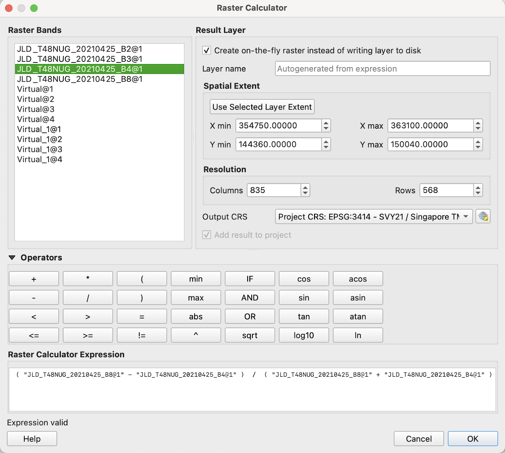
From the ‘Layers’ panel, click the ‘Open the Layer Styling panel’ button. The ‘Layer Styling’ panel will appear.
For ‘Symbol selection’, select ‘Singleband pseudocolor’ from the drop-down list
For ‘Color ramp’, select ‘Greens’ from the drop-down list.
Click ‘Apply’.
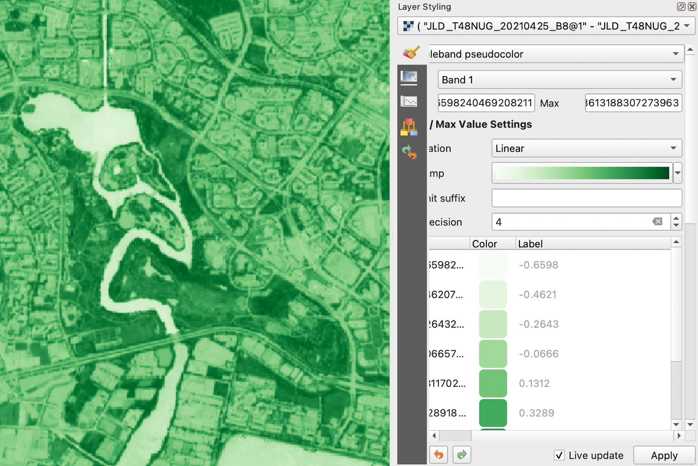
Save the raster layer as ‘S2_NDVI_2022’ in GeoTIFF format with CRS EPSG:3414.
To create the False Colour Composite and True Colour Composite layers, from the menu bar, select ‘Raster’ → ‘Miscellaneous’ → ‘Build Virtual Raster…’.
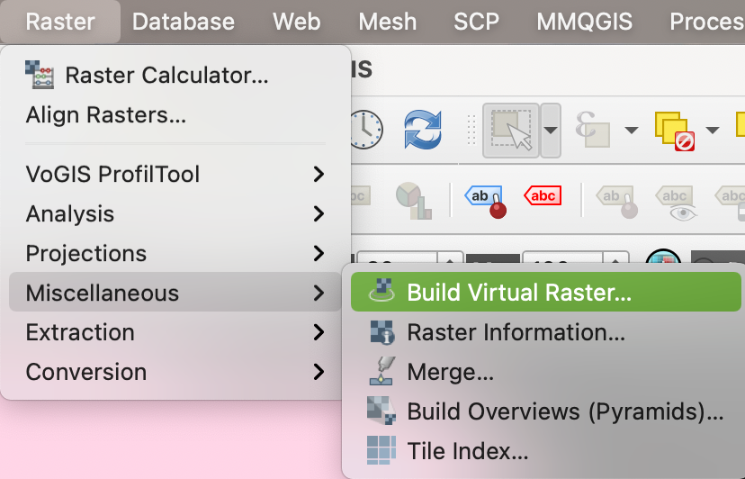
The ‘Build Virtual Raster’ window will appear.
For ‘Input layers’, select all the band layers.
Check the box next to ‘Place each input file into a separate band’
Click ‘Run’.
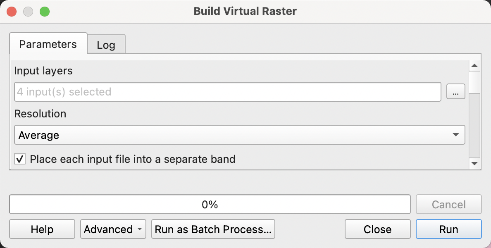
From the ‘Layers’ panel, click the ‘Open the Layer Styling panel’ button. The ‘Layer Styling’ panel will appear.
For the True Colour Composite,
For ‘Red band’, select ‘Band 3’ from the drop-down list.
For ‘Green band’, select ‘Band 2’ from the drop-down list.
For ‘Blue band’, select ‘Band 1’ from the drop-down list.
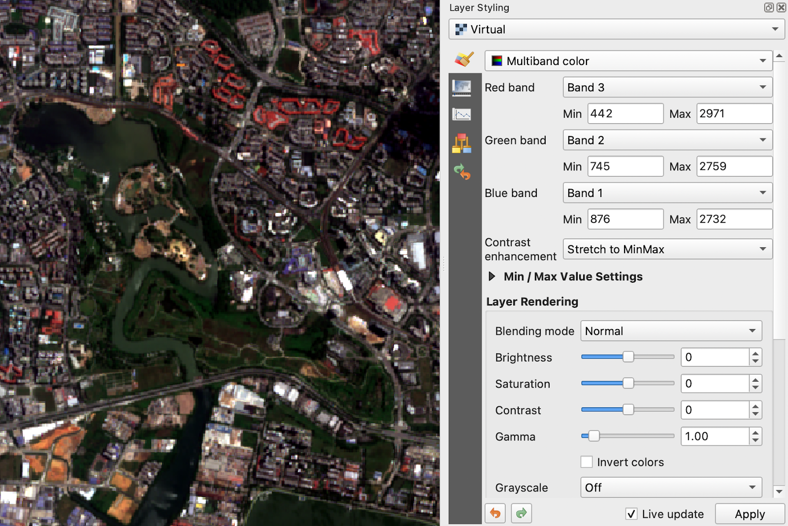
For the False Colour Composite,
For ‘Red band’, select ‘Band 4’ from the drop-down list.
For ‘Green band’, select ‘Band 3’ from the drop-down list.
For ‘Blue band’, select ‘Band 2’ from the drop-down list.
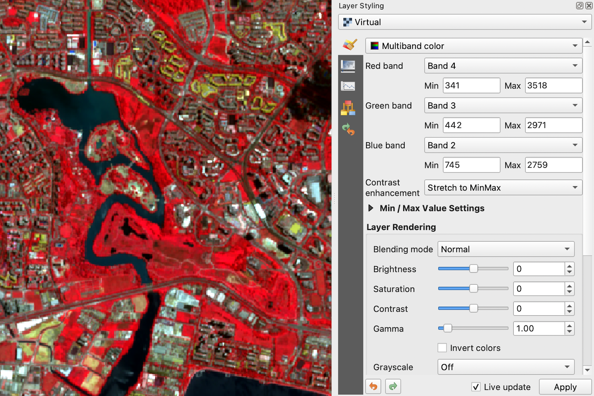
Click ‘Apply’. Save the raster layers as ‘S2_TCC_2022’ and ’S2_FCC_2022 respectively in GeoTIFF format with CRS EPSG:3414.
(B) Classification using Dzetsaka plugin
To create the classification training samples, from the menu bar, select ‘Layer’ → ‘Create Layer’ → ‘New Shapefile Layer…’.
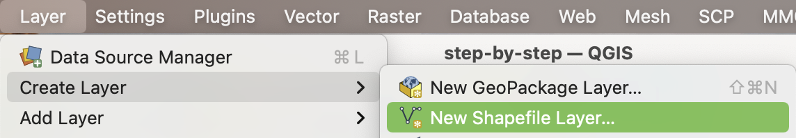
The ‘New Shapefile Layer’ window will appear.
For ‘File name’, click the ‘...’ button to create a ‘S2_YT_train_2022’ file.
For ‘Geometry type’, select ‘Polygon’ from the drop-down list.
For ‘Additional dimensions’, select ‘EPSG:3414’.
Create new fields ‘class’ | Integer | 10 and ‘className’ | String | 100.
Remove the ‘id’ field.
Click ‘OK’.
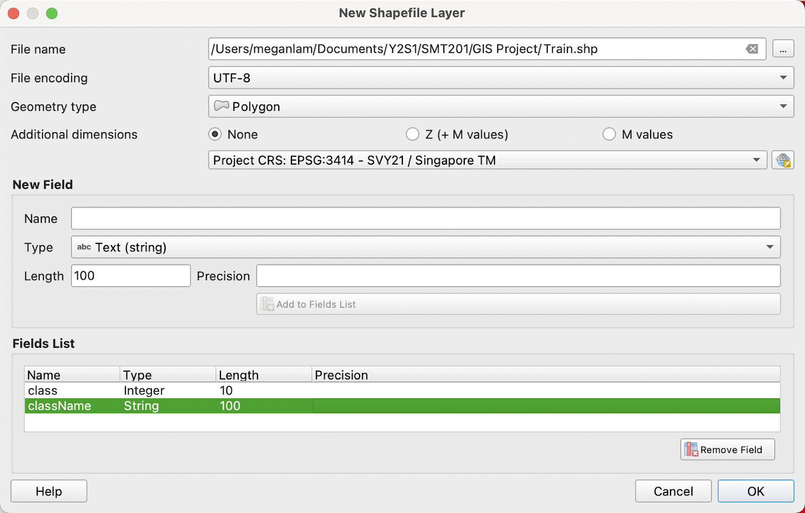
From the toolbar, click the ‘Toggle Editing’ button, then click the ‘Add Polygon Feature’ button.
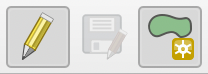
Left-click a sample site to define the ROI vertices and right-click to define the last vertex to close the polygon. Make samples according to the following classes:
| class | className |
|---|---|
| 10 | Water |
| 20 | Vegetation |
| 30 | Built-up |
| 40 | Bare land |
| 50 | Impervious surfaces |
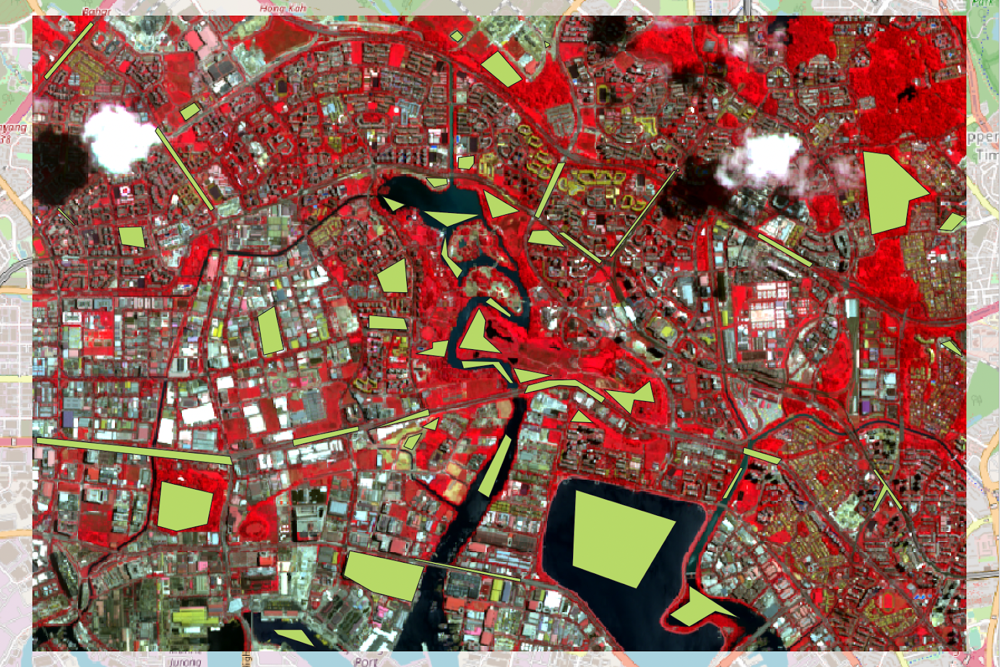
Repeat this process to create the classification test samples using different sample sites. Name the file ‘S2_YT_test_2022’.
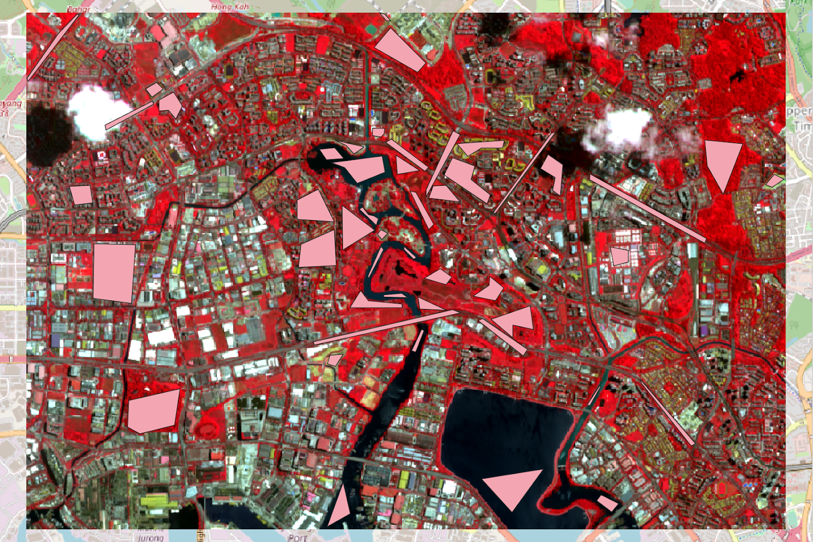
Install the Dzetsaka plugin. From the menu bar, select ‘Plugins’ → ‘dzetsaka’ → ‘classification dock’.
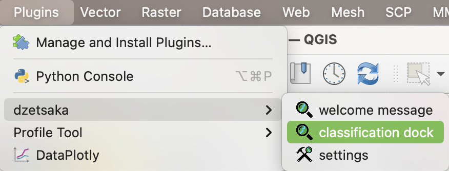
The Dzetsaka classification dock will appear.
For ‘The image to classify’, select ‘S2_FCC_2022’ from the drop-down list.
For ‘Your ROI’, select ‘S2_YT_train_2022’ from the drop-down list.
For ‘Column name where class number is stored’, select ‘class’ from the drop-down list.
Click the gear icon to open the settings panel. For ‘Classifier’, select ‘Random Forest’ from the drop-down list.
Click ‘Perform the classification’. Save the output layer as ‘S2_RF_2022’ in GeoTIFF format with CRS EPSG:3414.
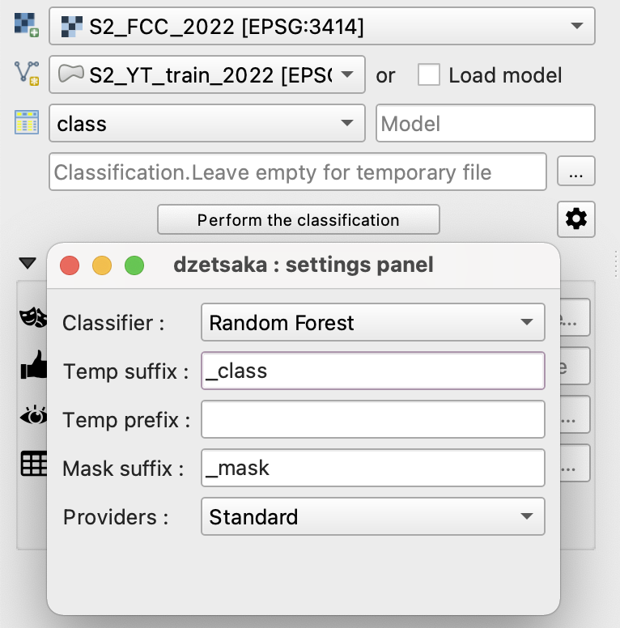
From the ‘Layers’ panel, click the ‘Open the Layer Styling panel’ button. The ‘Layer Styling’ panel will appear.
For ‘Symbol selection’, select ‘Paletted/Unique values’ from the drop-down list.
For ‘Color ramp’, select ‘Random colors’.
Click ‘Classify’.
- Double-click the ‘Label’ field for each value and rename them according to the respective class names.
Click ‘Apply’.
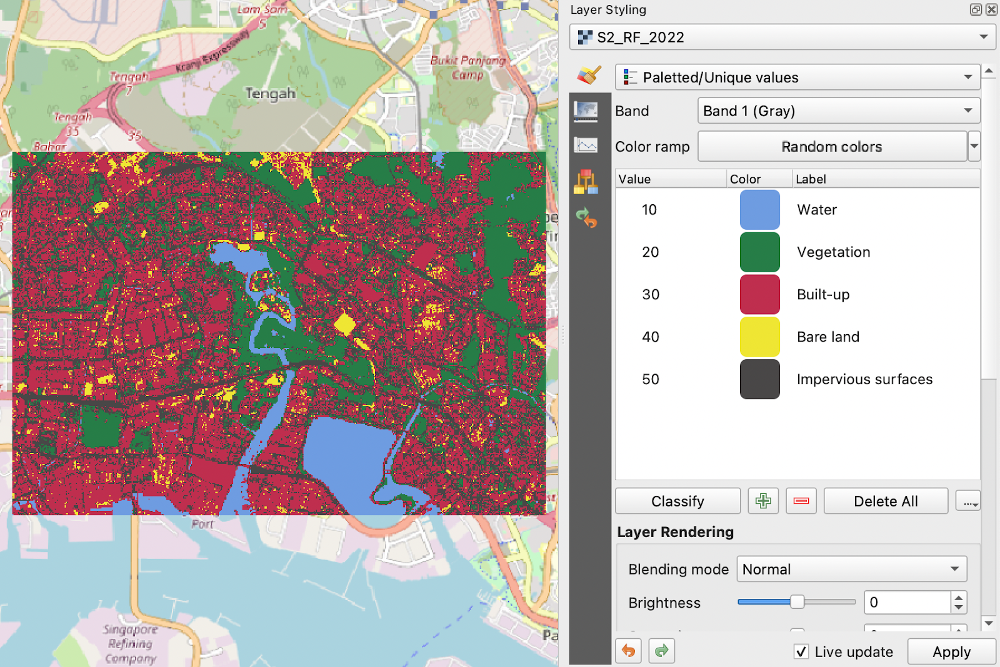
(C) Accuracy Calculation using SCP Postprocessing
Go to SCP → Postprocessing → Accuracy
Semi-Automatic Classification Plugin window should open up.
Under ‘Select the classification to assess’, select ‘S2_RF_2022’.
Under ‘Select the reference vector or raster’, select ‘S2_YT_test_2022’.
If layers do not show, click on the
 button to refresh the layers, and reselect.
button to refresh the layers, and reselect.Window should look like this.
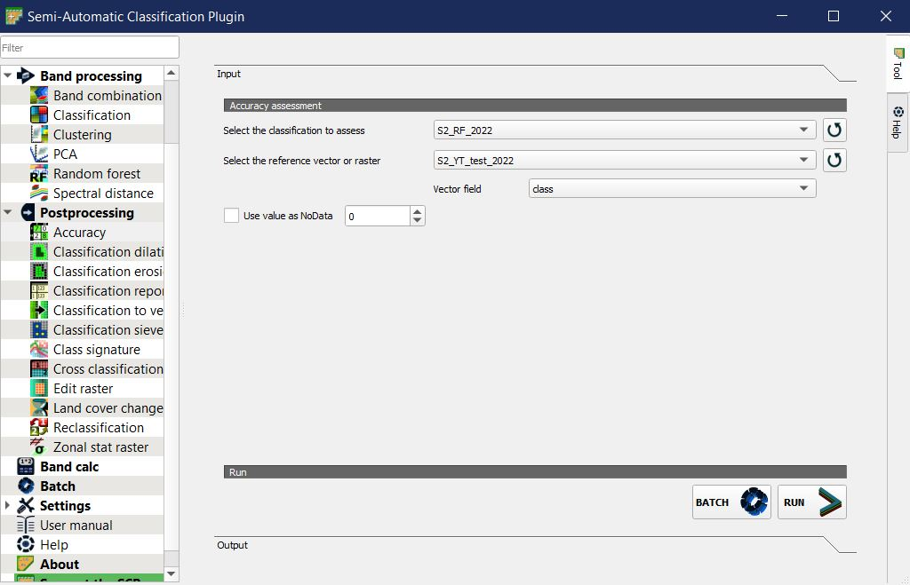
Click on ‘Run’.
Local file window named ‘Save error matrix raster output’ should open up.
Under ‘File name’, type in ‘22_YT_ML’.
Click ‘Save’ to save the output layer as file name.
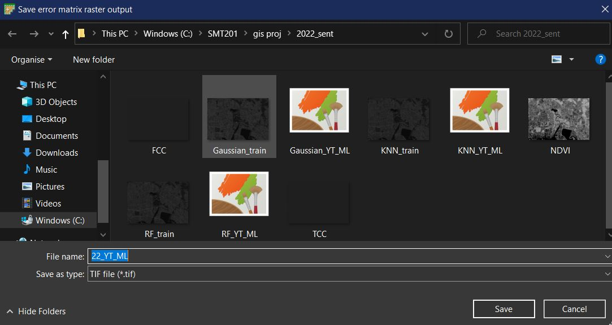
- Once saving is done, output window should look like this.
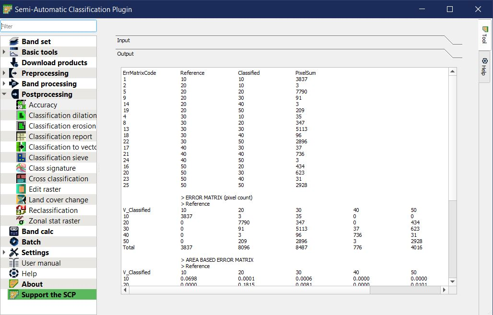
Scroll down to view the full results.
Take note of the Overall Accuracy [%] and Kappa hat classification values, as well as the PA [%] (Producer’s Accuracy) and Kappa hat of each class.
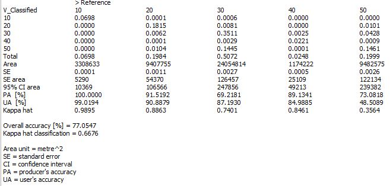
Furthermore, layer window should have an additional layer ‘22_YT_ML’.
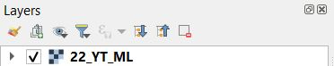
Layer should look like this.
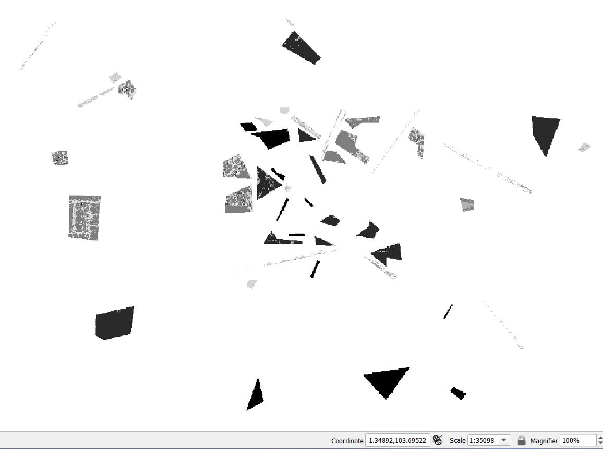
(D) Obtaining Classification Report
Go to SCP → Postprocessing → Classification Report
In the SCP window, under ‘Select the classification’, select ‘S2_RF_2022’.
Window should look like this.
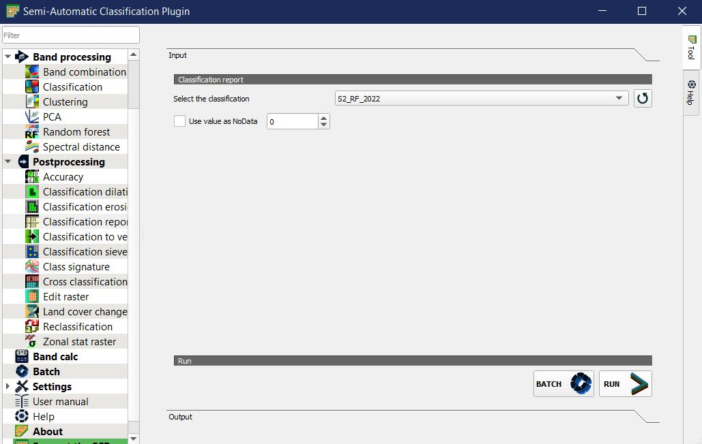
Click ‘Run’.
Save Classification report CSV file name as ‘22_classification’.
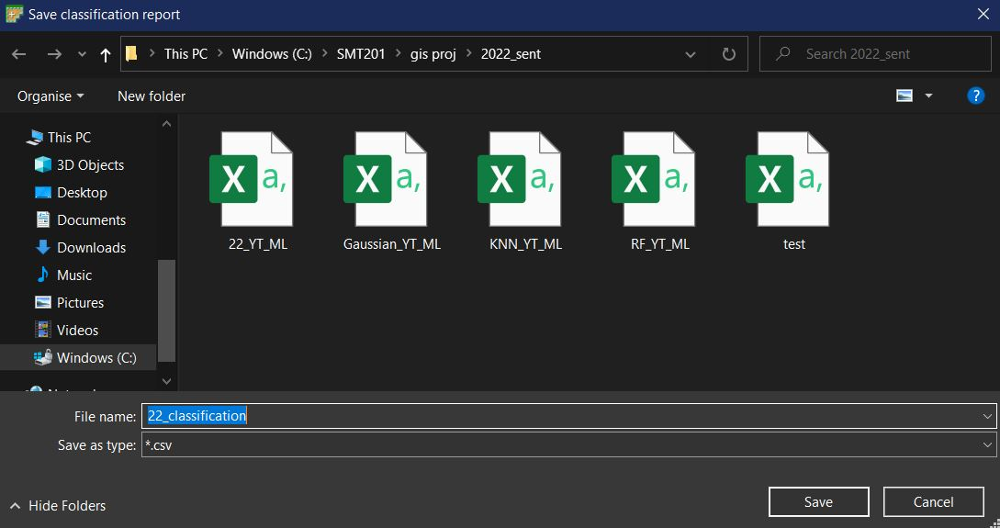
Click ‘Save’.
Output window should look similar to this.
Notice that the output shows each class’ total area as well as % area in the classified raster that you selected.
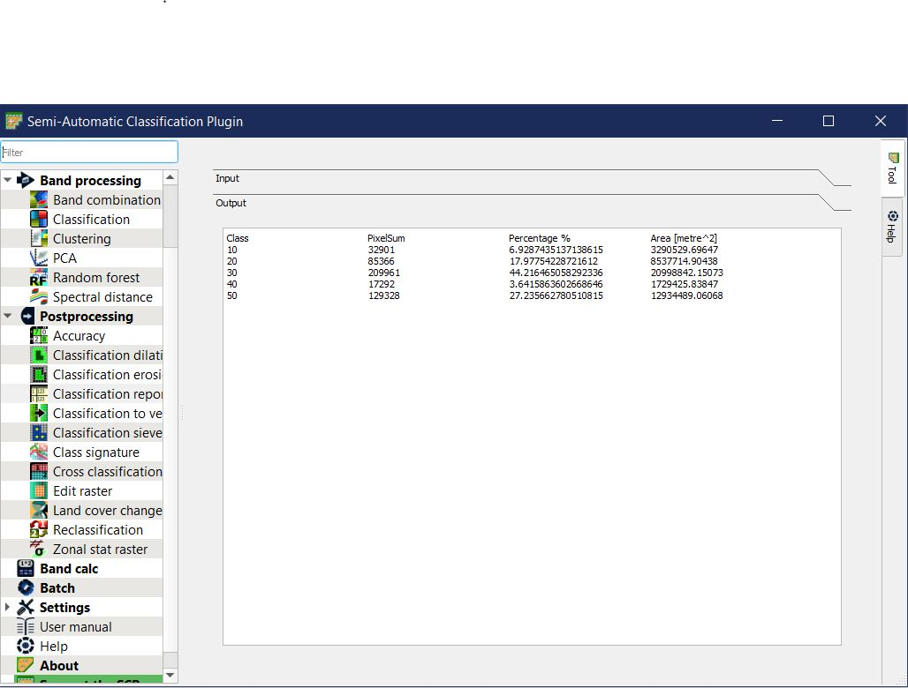
- Opening up the local directory where you saved the ‘22_classification’ CSV file, it should look similar to this.
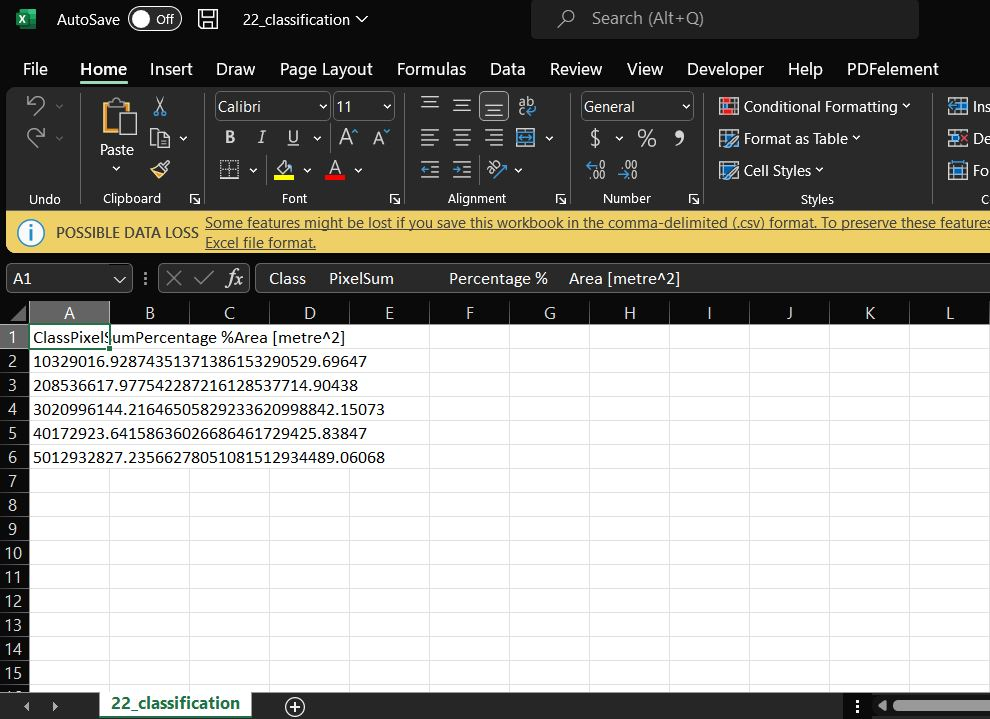